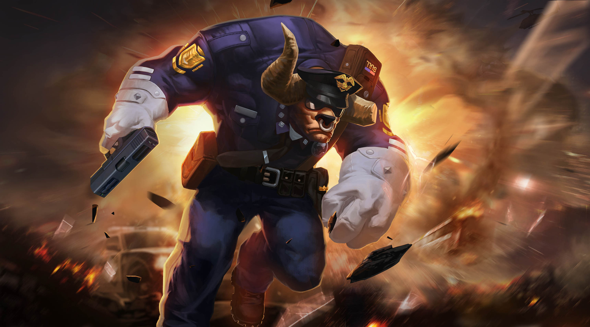

TORO
Tiểu sử
"Ngộ Không, gieo nhân nào gặt quả nấy!"
Toro luôn giữ mối hận Ngộ Không sau từng đó năm. Bá chủ cả dãy Hỏa Diệm Sơn, Toro được xem như một trong những vị thần vĩ đại nhất của thế giới. Sức mạnh và quyền lực của hắn hiển nhiên còn hơn cả Ngộ Không trong Hiệp Ước Máu của Quái Thú nếu không sử dụng bất kì hỗ trợ gì như Gậy Như Ý.
Sự thật là, Toro đã từng chia sẻ những gì tốt nhất với Ngộ Không, nhưng mọi thứ đã thay đổi kể từ khi Ngộ Không bắt đầu đi Tây Thiên thỉnh kinh. Tôn Ngộ Không xuống tay giết chết người anh em của Toro để bảo vệ Đường Tăng trên đường thỉnh Kinh. Chưa dừng ở đấy, Ngộ Không còn bắt con trai của Toro là Hồng Hài Nhi, và xen vào cuộc tình tay ba giữa Toro, Thiết Phiến Công Chúa và Ngọc Diện Hồ Ly. Kể từ đây, tình nghĩa huynh đệ rạn nứt, mối thâm thù của họ ngày càng trở nên sâu đậm, không bút mực nào tả xiết.
"Chúng ta đã thề là anh em kết nghĩa, sao hắn luôn gây rắc rối cho ta vậy?", Toro gầm lên hết sức giận dữ.
Toro muốn giáp mặt Ngộ Không để giải quyết mọi ân oán, nhưng Ngộ Không nay đã trở nên thật xa xôi tận Tây Thiên. Toro cảm thấy như bị hạ nhục. Sau khi biết tin Ngộ Không nay đã đến Athanor, Toro nắm lấy cơ hội và theo dấu Ngộ Không. Hắn chiếm được lòng tin của Afata sau khi tiết lộ danh tính thật và chờ đợi một trận thư hùng cùng "người anh em" của hắn.
“Con khỉ ngu ngốc kia mau ra đây? Ta sẽ cho ngươi một bài học bằng nắm đấm
Toro luôn giữ mối hận Ngộ Không sau từng đó năm. Bá chủ cả dãy Hỏa Diệm Sơn, Toro được xem như một trong những vị thần vĩ đại nhất của thế giới. Sức mạnh và quyền lực của hắn hiển nhiên còn hơn cả Ngộ Không trong Hiệp Ước Máu của Quái Thú nếu không sử dụng bất kì hỗ trợ gì như Gậy Như Ý.
Sự thật là, Toro đã từng chia sẻ những gì tốt nhất với Ngộ Không, nhưng mọi thứ đã thay đổi kể từ khi Ngộ Không bắt đầu đi Tây Thiên thỉnh kinh. Tôn Ngộ Không xuống tay giết chết người anh em của Toro để bảo vệ Đường Tăng trên đường thỉnh Kinh. Chưa dừng ở đấy, Ngộ Không còn bắt con trai của Toro là Hồng Hài Nhi, và xen vào cuộc tình tay ba giữa Toro, Thiết Phiến Công Chúa và Ngọc Diện Hồ Ly. Kể từ đây, tình nghĩa huynh đệ rạn nứt, mối thâm thù của họ ngày càng trở nên sâu đậm, không bút mực nào tả xiết.
"Chúng ta đã thề là anh em kết nghĩa, sao hắn luôn gây rắc rối cho ta vậy?", Toro gầm lên hết sức giận dữ.
Toro muốn giáp mặt Ngộ Không để giải quyết mọi ân oán, nhưng Ngộ Không nay đã trở nên thật xa xôi tận Tây Thiên. Toro cảm thấy như bị hạ nhục. Sau khi biết tin Ngộ Không nay đã đến Athanor, Toro nắm lấy cơ hội và theo dấu Ngộ Không. Hắn chiếm được lòng tin của Afata sau khi tiết lộ danh tính thật và chờ đợi một trận thư hùng cùng "người anh em" của hắn.
“Con khỉ ngu ngốc kia mau ra đây? Ta sẽ cho ngươi một bài học bằng nắm đấm
CÔNG TY CỔ PHẦN GIẢI TRÍ VÀ THỂ THAO ĐIỆN TỬ VIỆT NAM
Văn phòng đại diện: Tầng 29, tòa nhà Trung tâm Lotte Hà Nội, số 54, đường Liễu Giai, Phường Cống Vị, Quận Ba Đình,
Thành phố Hà Nội, Việt Nam
Điện thoại: (04)7305-3939 | Fax: (04)3759-2429